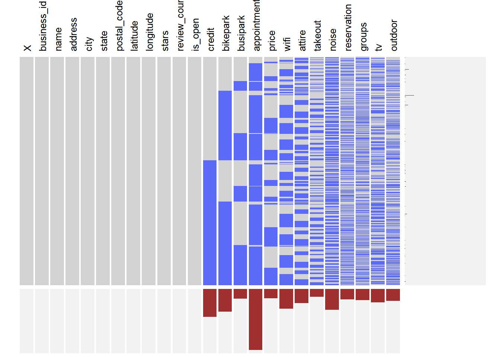
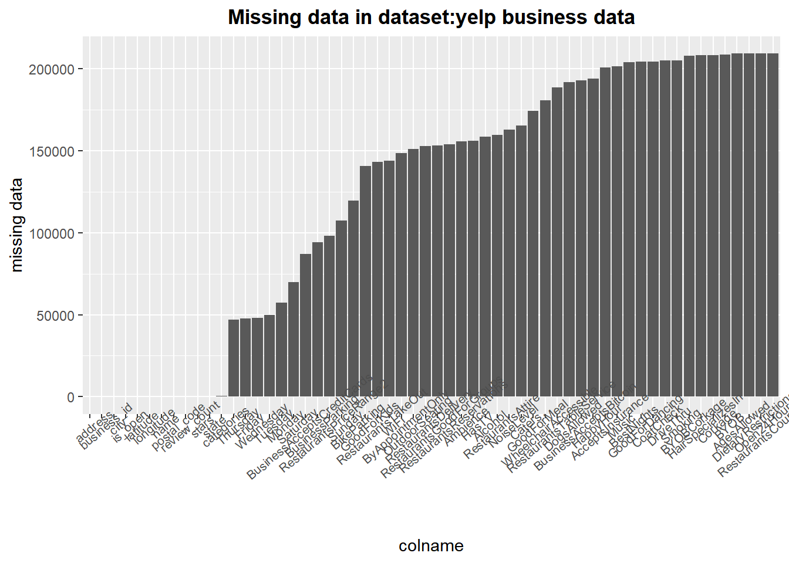

Chapter 4 Missing values
The data had null values. To preserve all the information, we imputed or dropped the rows and columns containing null values while conducting exploratory analysis that made use of these features.
We construct a visna analysis to analyze the missing values pattern for the variables that we would be using in our exploratory analysis.

From this graph, we see that the pattern of missing values are very diverse and there are just a couple of patterns that have a high frequency. However, the characteristics of these patterns seem to be very complex and random.
What we do see clearly is that there are a few varables with high proportion of missing entries. The most prominent ones are appointment, credit and bikepark. We may need to try to avoid using these variables.
To analyze the number of missing values in each variable, we counted the number of NAs in each column and plot them in histogram:

We found that there are plenty of missing data in about 20 columns to the right, so later we just delete all these columns. For the columns in the middle, deleting or not depends on which part of data do we need, if we want to analysis some specific region, then situation may change. For columns with 50000-100000 missing data, if these columns are important to our analysis, we may just delete the missing data, if not, delete the whole column.